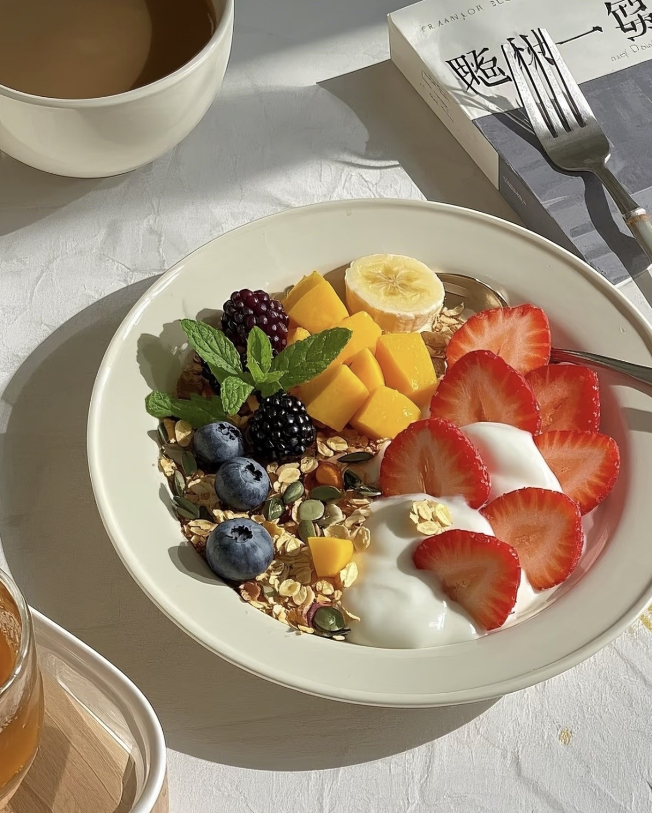
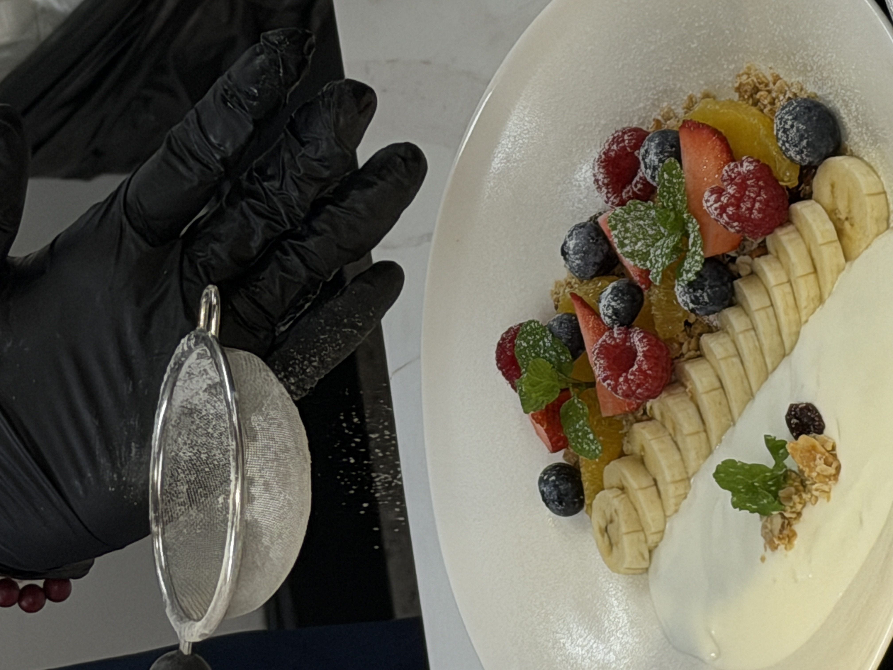

Yogurt Oatmeal
优格酸奶麦片 — A refreshing mix of yogurt, oats, and fresh fruits.
Ingredients
- Yogurt
- Oats
- Strawberries
- Blueberries
- Banana
- Honey
- Nuts
Directions
- Add oats to a bowl.
- Pour yogurt over the oats.
- Add sliced fruits on top.
- Drizzle with honey.
- Sprinkle nuts and serve.